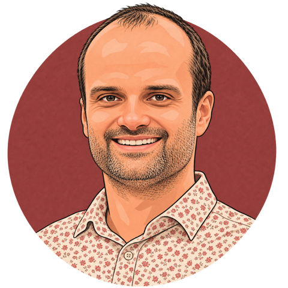
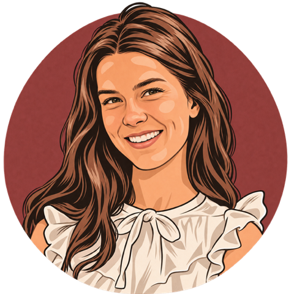
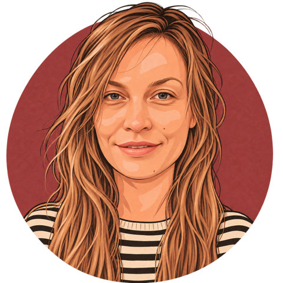
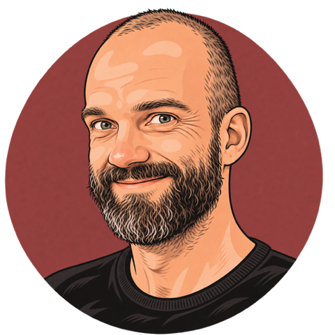
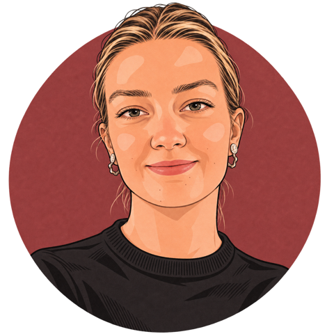
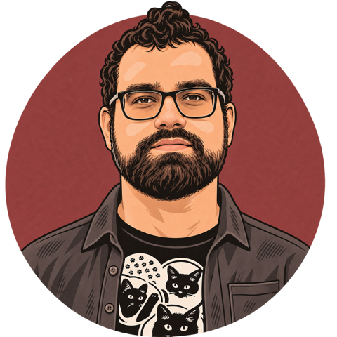
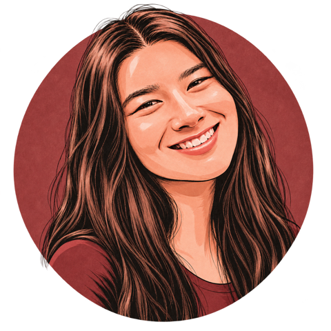
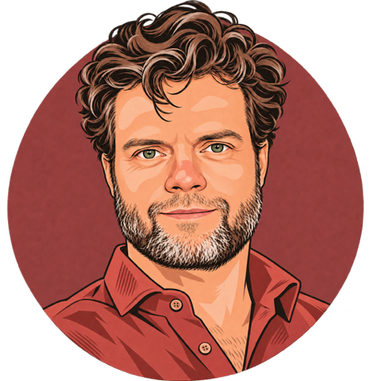
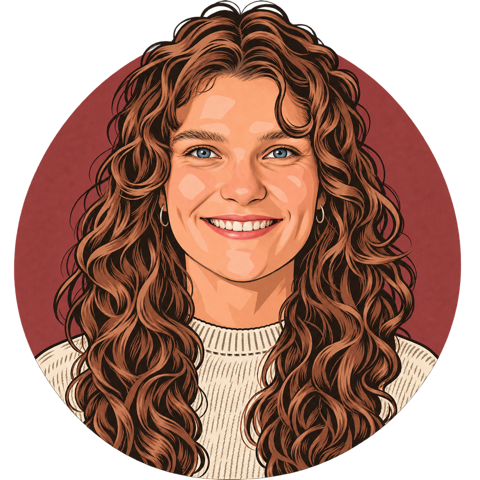
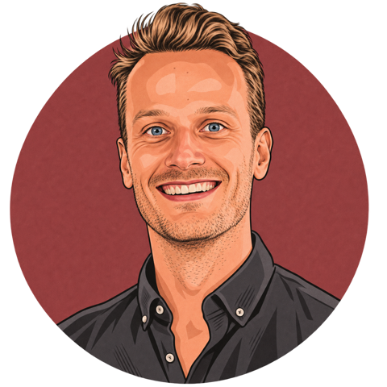

Publications¶
Last updated: 2026-11-11 This list is fetched automatically every day from OpenAlex, members' ORCID records and Semantic Scholar, so it can miss published work or contain mistakes. Download it as BibTeX.
Everything our members have published since 1 January 2025, including preprints that have not yet been peer reviewed.
Papers published in a journal or at a conference after peer review. Preprints (for example on arXiv) that have not been reviewed yet are not counted.
Peer-reviewed papers at top-tier venues (A* in the CORE conference ranking), for example ACL, EMNLP, NeurIPS, ICML and ICLR. Workshops and Findings volumes are not counted.
2026¶



+1- +3

- +1

- Belief Propagation in LLM World Models: Measuring Strategic Information Bias with Prediction Markets

- +5


- +1
2025¶


2023¶
- +1